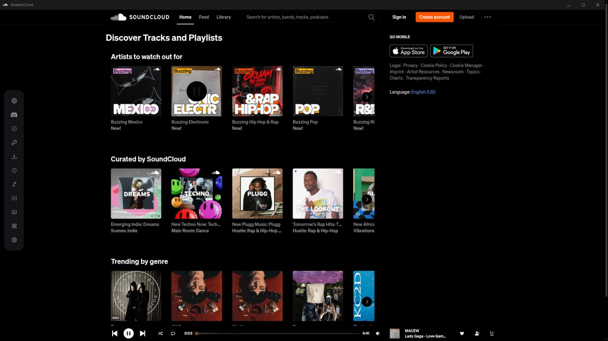
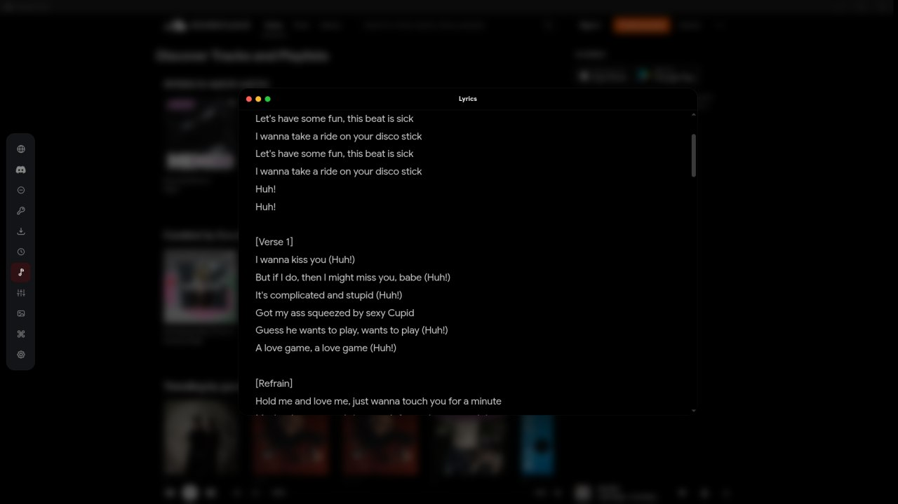
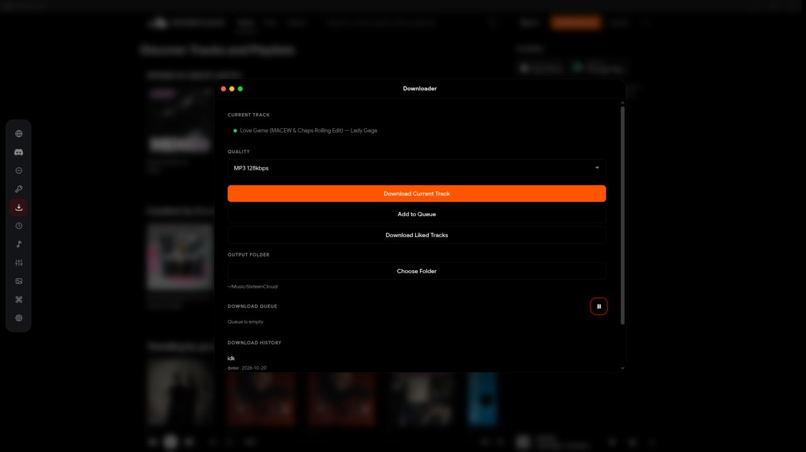
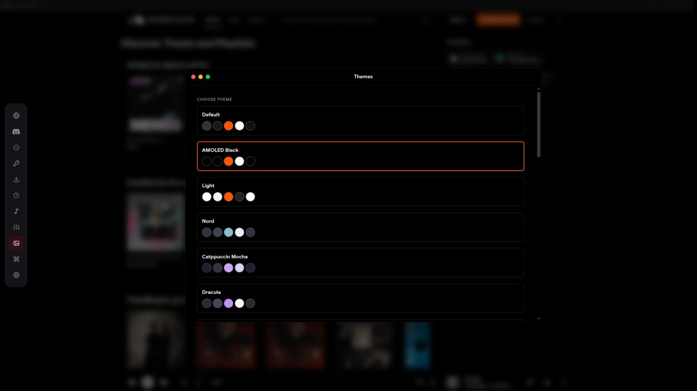
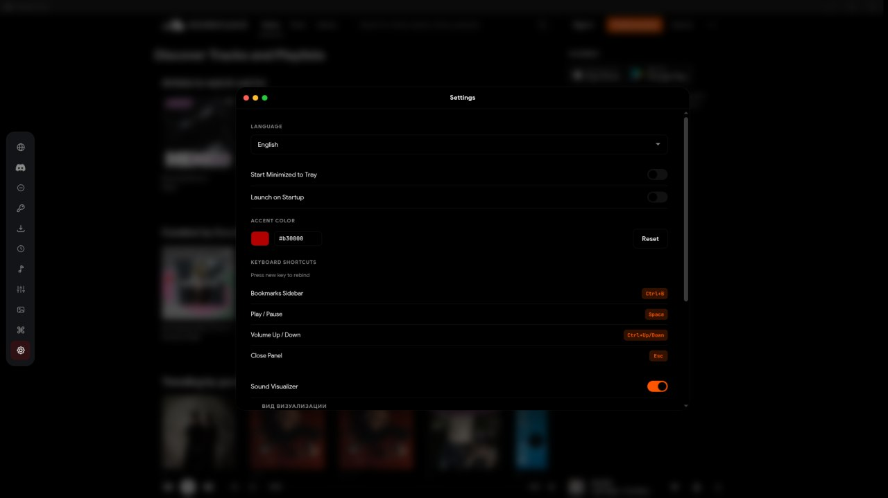
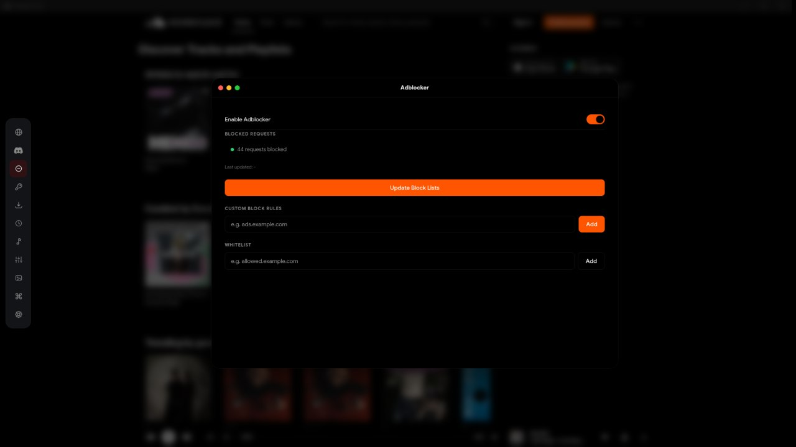
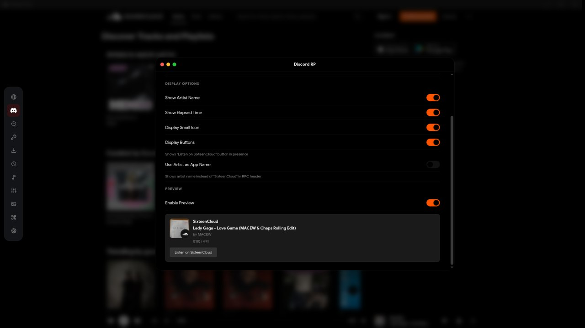

Ad-free playback
Request filtering plus cosmetic cleanup. Promoted tracks and banners never reach the player.
A real desktop app for the catalog you already use. Ad-free playback, synced lyrics, a 10-band EQ, offline downloads and Discord Rich Presence.
SoundCloud has the catalog. SixteenCloud gives it a proper desktop home: window controls, media keys, a queue that survives, and no browser furniture around the music.
Your music shouldn't live between twenty tabs and a password prompt. Open the app, press play, close the lid. That's the whole idea.
The player wraps the SoundCloud web experience in Electron, then adds what a music app is expected to have: a tray icon, media keys, MPRIS on Linux, a mini player, downloads, lyrics, an equalizer and a visualizer wired to the real audio graph.
It is built for Linux first, and packaged for Windows and macOS from the same codebase. No account tricks and no second library to keep in sync.
ads. No promoted tracks, no interruptions.
EQ bands, with presets and per-track memory.
lyric sources, synced and plain.
platforms from one codebase.
Small details everywhere, so the only thing you notice is the music.
Everything between pressing play and hearing the track.
Request filtering plus cosmetic cleanup. Promoted tracks and banners never reach the player.
Time-synced LRC with auto-scroll and a 3D roulette view. Nine sources with a fallback chain.
A real Web Audio graph with presets, a visible curve, and memory per track.
Several modes driven by the actual analyser node. Idle-friendly, never a fake animation.
A 400×134 always-on-top window with artwork, scrubber and controls. Ctrl+P to summon, pin it where you like.
What you keep, what you play next, and what the outside world sees.
Tracks and playlists, HLS-aware, with a queue, quality presets, output folder and history.
Played tracks are written to disk and play back without a network. Auto-cache, LRU eviction, a size cap and a one-click clear.
Track, artist, elapsed time and artwork through the local Discord IPC socket. Works with Discord and Vesktop.
The parts that make the app feel native to the machine it runs on.
Tray, MPRIS, media keys, desktop entry and notification controls. Not an afterthought.
AMOLED Black, Light, Nord, Catppuccin Mocha, Dracula — or your own CSS. The accent colour drives toggles, badges, sliders and buttons everywhere, live.
Sidebar, play/pause, volume, mini player — every shortcut is rebindable, and conflicts are caught before they stick.
Optional proxy routing for region-locked catalogs. Off by default, one switch away.
Signed Windows installer and AppImage builds check GitHub Releases for new versions.
A strict Content-Security-Policy on the local UI, sandboxed windows and no Node in the page. The remote catalogue stays remote.
Screenshots from the current build. No mockups, no marketing gloss.







The Discover feed, minus promoted cards and banners.
One codebase, three builds. Updates come straight from GitHub Releases.
chmod +x SixteenCloud.Setup.3.0.1.AppImage
deb and pacman packages are on the release page.
Per-user install. SmartScreen may warn about the publisher; updates install in place.
x86_64 only — Apple Silicon runs it through Rosetta.
xattr -dr com.apple.quarantine /Applications/SixteenCloud.app
The build is unsigned. The command above removes the warning.
Older 2.x builds migrate to 3.0.1 through the same release feed. On Wayland, launch with --ozone-platform=wayland if the window stays hidden.